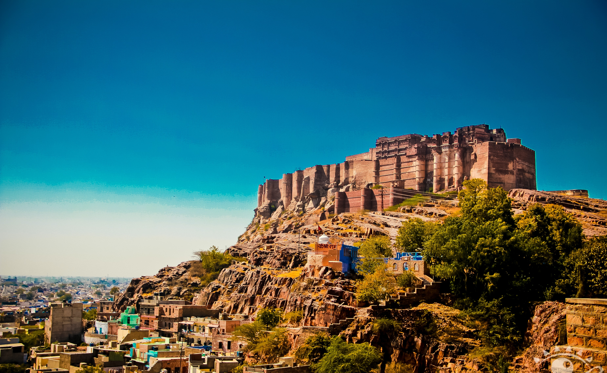

Travelling Gallery
England
Bitch

Jaipur Fort

78$
The country is multi-ethnic and multi-cultural, which has a significant effect on its politics. About half the population is ethnically Malay, with large minorities of Chinese, Indians, and indigenous peoples. The country's official language is Malaysian, a standard form of the Malay language. English remains an active second language. While recognising Islam as the country's established religion, the constitution.
78$
Hong Kong is a highly developed territory and ranks fourth on the UN Human Development Index. The city has the largest number of skyscrapers of any city in the world, and its residents have some of the highest life expectancies in the world. The dense space led to a developed transportation network with public transport rates exceeding 90 percent. Hong Kong is ranked sixth in the Global Financial Centres Index and is ranked.
78$
Singapore is a unitary parliamentary republic with a Westminster system of unicameral parliamentary government. Singapore is widely regarded to have an incorrupt and meritocratic government, with a fair judiciary and strong rule of law. While the country practices parliamentary democracy, the government has significant control over politics and society, and the People's Action Party has ruled continuously since independence.
This is a huge area to cover but we believe pre-travel should be broken down into two distinct stages: before purchase (also known as the researching stage) and post-booking but pre-departure. The researching stage is the most critical element of the customer’s journey.

Brands should also take advantage of their ‘on holiday’ euphoria and encourage sharing on social media by the use of brand specific hashtags. Equally brands should make use of this valuable user generated content with things like social walls where customers .

Post-travel invites a whole new wave of opportunities for brands with holiday makers looking back at their holiday and sharing ‘throw back’ and ‘holiday blues’ photos of their travels for months following their trip. They also use this time to tell everyone .